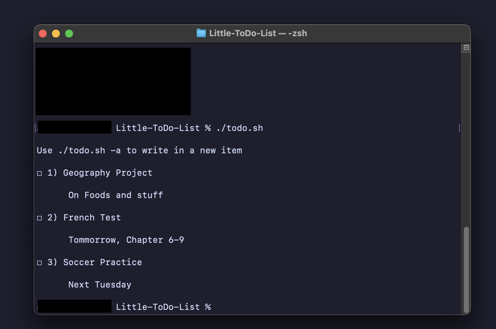
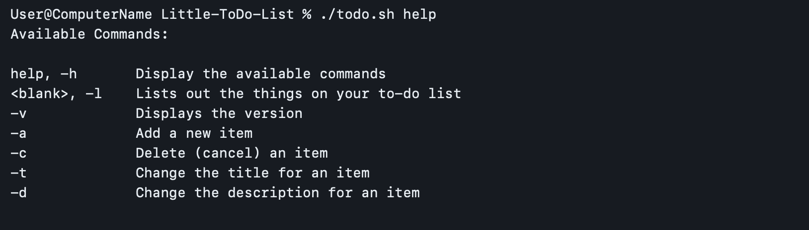

小型待辦事項（Little-ToDo-List）
此是一個開源的命令列待辦事項工具。它是用Python和ShellScript製造的。其主要用途就是幫您整理您的待辦事項！此網頁可以當為README.md的中文版。
如何下載
請勿使用GitHub內Release部分的Zip檔案。
第一：請先在您的Terminal內run以下的命令：
git clone https://github.com/ACertainPersons/Little-ToDo-List.git && cd little-todo-list && touch data.txt && echo "Use ./todo.sh -a to write in a new item" >> data.txt
然後：請複製此檔案於/Users
可能的命令：
